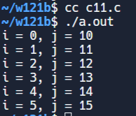

程式練習二 <<
Previous Next >> Brython
W2~W5 Exercises
1.
#include <stdio.h>
void main()
{
int i, j;
i = 0;
j = 10; /* 在迴圈外先設定初值 */
// 使用 do-while 迴圈，先執行一次循環內的程式碼
do
{
printf("i = %d, ", i);
printf("j = %d \n", j);
// i 和 j 分別遞增
i++;
j++;
} while (i < 6); /* 檢查條件的地方 */
}

2.
#include <stdio.h>
int main()
{
int grade[5]; /* 大小為 5 的陣列 */
int i;
grade[0] = 75; /* 第一個元素 */
grade[1] = 80; /* 第二個元素 */
grade[2] = 85; /* 第三個元素 */
grade[3] = 70; /* 第四個元素 */
grade[4] = 90; /* 第五個元素 */
// 使用迴圈輸出陣列的元素
for (i = 0; i < 5; i++)
{
printf("Number %d = %d\n", i, grade[i]);
}
return 0;
}

3.
#include <stdio.h>
int main()
{
int array[3][3];
int x, y;
// 將數值分配給二維陣列中的每個元素
array[0][0] = 1;
array[0][1] = 2;
array[0][2] = 3;
array[1][0] = 4;
array[1][1] = 5;
array[1][2] = 6;
array[2][0] = 7;
array[2][1] = 8;
array[2][2] = 9;
// 使用巢狀迴圈遍歷二維陣列，並輸出每個元素的值
for (x = 0; x < 3; x++)
{
for (y = 0; y < 3; y++)
{
printf("%d,", array[x][y]);
}
}
return 0;
}
4.
#include <stdio.h>
int main()
{
char *s_pointer = "Hello";
char ch1, ch2;
ch1 = *s_pointer;
ch2 = s_pointer[0];
printf("%c, %c", ch1, ch2);
return 0;
}
5.
#include <stdio.h>
void main()
{
char *str = "Eric";
// 透過指標運算存取字串中的各個字元並輸出
printf("%c", *(str + 0)); /* 也可寫 printf("%c", str[0]); */
printf("%c", *(str + 1)); /* 也可寫 printf("%c", str[1]); */
printf("%c", *(str + 2)); /* 也可寫 printf("%c", str[2]); */
printf("%c", *(str + 3)); /* 也可寫 printf("%c", str[3]); */
}
6.
#include <stdio.h>
int main()
{
int *pointer_a, a;
// 將指標 pointer_a 指向變數 a 的位址
pointer_a = &a;
// 將變數 a 賦值為 10
a = 10;
// 輸出變數 a 的值和指標 pointer_a 所指向的值
printf("%d, %d", a, *pointer_a);
return 0;
}
7.
#include <stdio.h>
#include <string.h>
/* 定義一個結構 Mouse */
struct Mouse
{
int xPos, yPos;
char Name[10];
};
/* 主函數 */
int main()
{
/* 創建一個 Mouse 結構的實例 myMouse */
struct Mouse myMouse;
/* 給結構成員賦值 */
myMouse.xPos = 10;
myMouse.yPos = 20;
strcpy(myMouse.Name, "Micky");
/* 輸出結構成員的值 */
printf("Name: %s, X: %d, Y: %d", myMouse.Name, myMouse.xPos, myMouse.yPos);
return 0;
}
8.
include <stdio.h>
/* 定義一個共用體 Record1 */
union Record1
{
int xPos, yPos;
char ch;
};
/* 主函數 */
int main()
{
/* 創建一個 Record1 共用體的實例 R1 */
union Record1 R1;
/* 將 xPos 成員賦值為 66 */
R1.xPos = 66;
/* 由於共用體的所有成員共享同一塊記憶體，因此 yPos 和 ch 也會被賦值為 66 */
printf("xPos=%d, yPos=%d, ch=%c", R1.xPos, R1.yPos, R1.ch);
return 0;
}
9.
#include <stdio.h>
/* 定義一個函數 Hello，該函數打印 "Hello" */
void Hello(void)
{
printf(" Hello ");
}
/* 主函數 */
int main()
{
void (*func)(void); /* 宣告一個函數指標 */
func = Hello; /* 將 Hello 函數的位址指派給 func */
func(); /* 使用函數指標呼叫 Hello 函數 */
return 0;
}
10.
#include<stdio.h>
#define ONE 1
#define TWO 2
#define HELLO "hello"
int main()
{
printf("%d, %d, %s", ONE, TWO, HELLO);
return 0;
}
程式練習二 <<
Previous Next >> Brython